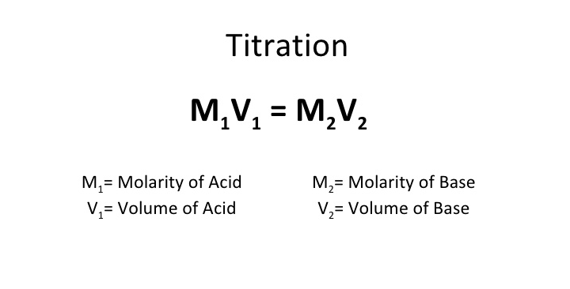

Equilibrium Constant (K)
- K is a proportion of [products] over [reactants] at equilibrium.
Reaction Quotient (Q)
- Q is a proportion of [products] over [reactants] initially.
K vs Q
- If Q is bigger than K, the reverse direction needs to be taken to reach equilibrium
- If Q is less than K, the forward direction needs to be taken to reach equilibrium
- If Q is equal to K, equilibrium has already been reached
Equilibrium shifts and Le Chatelier
- Adding a reactant would make the equilibrium shift to the left.
- Adding a product would make the reaction shift to the right.
- Adding pressure would shift the equilibrium to the side with more moles of gas.
ICE Charts
- Use ICE charts to solve for K or M.
Buffers
- Buffers are solutions that maintain a constant pH. It has to have a weak acid with its conjugate base or a weak base with its conjugate acid.
- The equivalence point is when the moles of the titrant is equal to the moles of the titrate. It is when titration is complete.
Titration

- A titration of a strong acid with a strong base would have an equivalence point at a pH of 7.
- A titration of a strong acid with a weak base would have an equivalence point at a pH less than 7.
- A titration of a weak acid with a strong base would have an equivalence point at a pH higher than 7.
- A titration of a weak acid with a weak base would have an equivalence point at a pH slightly lower than 7.
- Any titration of a weak acid, a buffer is formed before the equivalence point is reached.
PH
**Note: If you want to study content in the images, just click on the image to disappear and test yourself. Click twice for the image to reappear.